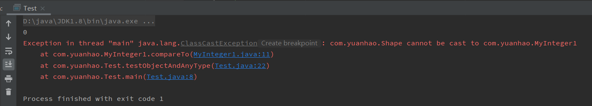
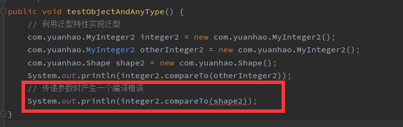

Preface
最近在重新学习数据结构，因为以前总是停留在概念，只知道如何使用，但不清楚具体的实现机制，
于是想着借此机会阅读 JDK 源码，另外尝试自己实现一个简单的 JDK ，巩固基础并且深入学习。
学习过程中也捡起了放置了很久的一本书《数据结构与算法分析 Java 版》，因为以前基础比较薄弱，
并且缺少练习，导致对书中很多概念模糊不清，花费将近半天时间，重新阅读了泛型这一小节，
纸上得来终觉浅，绝知此事要躬行，因此在阅读过程中，也将一些地方，用代码实现了一遍。
（代码部分链接如下：泛型机制和实现代码)
重新学习，收获还是很多的，站在和以前不同的角度去学习，以前书上的一些笔记也得到了解答，
接下来的内容按照这本书的内容顺序，加上一些个人理解和代码实现来叙述，会忽略一些基础。
Details
Object + 接口 / 泛型特性
Object + 接口类型表示泛型
Java中的基本思想就是可以通过使用像Object类这样的超类来实现泛型类，不过只有在使用
Object类中已有的方法能够表示所执行操作的时候，才能采用这种方式，因此，可以使用接口类型表示泛型，比如
Comparable，为Object提供了一种能力比较对象大小。那么不妨简单的构建以上情况，
MyInteger1类实现Comparable1接口，并且附上一个测试方法：1
2
3
4public interface Comparable1 {
public int compareTo(Object o);
}1
2
3
4
5
6
7
8
9public class MyInteger1 implements Comparable1 {
int val;
public int compareTo(Object o) {
MyInteger1 t = (MyInteger1) o;
return this.val - t.val;
}
}1
2
3
4
5
6
7
8
9public void testObjectAndAnyType() {
// 利用 Object 超类实现泛型
MyInteger1 myInteger = new MyInteger1();
MyInteger1 otherInteger = new MyInteger1();
Shape shape1 = new Shape();
System.out.println(myInteger.compareTo(otherInteger));
// 运行时会抛出 ClassCastException
System.out.println(myInteger.compareTo(shape1));
}运行结果如下图：

泛型特性实现泛型
Java 5支持泛型类，当指定一个泛型类时，类的声明则包含一个或多个类型参数，位于<>内，与
Object类不同的是，如果在给定一个参数类型以后，尝试传递其他参数，那么就会产生编译错误。仍然简单构造上述情况，
MyInteger2类实现Comparable2接口，并附上一个测试方法：1
2
3public interface Comparable2<T> {
public int compareTo(T o);
}1
2
3
4
5
6
7
8public class MyInteger2 implements Comparable2<MyInteger2> {
int val;
public int compareTo(MyInteger2 o) {
return this.val - o.val;
}
}1
2
3
4
5
6
7
8
9public void testObjectAndAnyType() {
// 利用泛型特性实现泛型
com.yuanhao.MyInteger2 integer2 = new com.yuanhao.MyInteger2();
com.yuanhao.MyInteger2 otherInteger2 = new com.yuanhao.MyInteger2();
com.yuanhao.Shape shape2 = new com.yuanhao.Shape();
System.out.println(integer2.compareTo(otherInteger2));
// 传递参数时产生一个编译错误
System.out.println(integer2.compareTo(shape2));
}编译结果如下图：

对比结果
不难看出，利用
Java 5的泛型特性去实现泛型构件，避免了以前的运行时错误
ClassCastException，通过使类变成泛型类，将运行时才能报告的许多错误，转变为现如今编译时的错误。
数组兼容性 / 通配符
协变数组类型
在介绍这个概念之前，不妨先看一段代码（可以先忽略注释），思考能否通过编译以及运行：
1
2Person[] arr = new Employee[5]; // 编译: arrays are compatible
arr[0] = new Student(...); // 编译: Student IS-A Person上述代码中，
Employee和Student继承自Person，先说结果：可编译但会运行错误。因为
Employee IS-A Person，因此Employee[] IS-A Person[]，这似乎是没问题的，但是
Student IS-A Person，而Student IS-NOT-A Employee，这就会产生类型混乱。运行时系统不会抛出
ClassCastException，因为不存在类型转换。避免这种情况最容易的办法是指定这些数组不是类型兼容的，可是
Java中数组是兼容的，称为协变数组类型（covariant array type），其实从多态的角度挺容易理解这个问题的。
第二段代码中，编译时没有进行动态绑定，不清楚是
Person还是Employee，所以运行出错，如果将一个不兼容的类型插入到数组中，那么虚拟机将抛出
ArrayStoreException异常。1
2Shape[] arr = new Square[5];
arr[0] = new Circle();
1
arr = new Square[] {new Circle()}; // Incompatible types. Found: 'Circle', required: 'Square'
如果再深入思考一点，可以发现这样声明时，就会出现编译报错，恰恰验证了从多态角度考虑的正确性。
带有限制的通配符
因为使用泛型的全部原因就在于产生编译器错误而不是运行时异常，所以泛型集合是不可协变的，
因此不能传递类型不同的参数，但是这样一来，就使得代码失去了灵活性，对用户而言不太友好，
因此，
Java 5用通配符（wildcard） 来弥补这个不足，其用来表示参数类型的子类或超类。1
2
3
4
5
6
7
8
9
10
11
12
13
14
15
16
17public void testCovariant() {
List<Shape> list1 = new ArrayList<>();
List<Square> list2 = new ArrayList<>();
System.out.println(totalArea(list1));
System.out.println(totalArea(list2));
}
/**
* Collection<Shape> 不加通配符就会产生编译错误
*/
public static double totalArea(Collection<? extends Shape> arr) {
double total = 0;
for (Shape s : arr) {
total += s.test();
}
return total;
}
类型限界
类型限界的概念其实还是蛮好理解的，就是限制参数类型，但是比较难理解的地方是改进的做法。
findMax 是一个泛型方法，需要对参数执行 compareTo 方法：
1 | // 不合法 编译出错 不能运行 |
如果不对 <T> 添加类型限制，编译器不能证明 arr[0] 对 compareTo 方法调用是合法的，所以编译错误。
因此需要类型限界（type bound）解决这个问题，类型限界在尖括号内指定，指定参数必须具有的性质。
因此可以对代码进行修改：
1 | // 可以运行 但会 warning |
这种做法看起来很自然，但是在 IDEA 编译器下，会报出 warning，但不影响运行，
可以参考这篇回答：关于 <T extends Comparable> warning，其中有一个回答：
In essence, this warning says that
Comparableobject can’t be compared to arbitrary objects.Comparable<T>is a generic interface, where type parameterTspecifies the type of the object this object can be compared to.So, in order to use
Comparable<T>correctly, you need to make your sorted list generic, to express a constraint that your list stores objects that can be compared to each other, something like this:
2
3
4
public void add(T obj) { ... }
...
>}
这个回答和书上后续的补充是对应的，那么接着修改上述代码，如下：
1 | // warning 消失 |
那么为何还会出现 <T extends Comparable<? super T>> 这种形式的类型界限呢？
为了看清楚这个问题，编写一段代码：
( Square 是 Shape 的子类，并且 Shape 实现 Comparable<Shape>)
1 | { |
此时，我们所知道的只是 Square 实现 Comparable<Shape>，
于是 Square IS-A Comparable<Shape>，这在前面也解释过，
但是 Square IS-NOT-A Comparable<Square>，这看起来合情合理，可放到代码里确实费解的。
因此对类型界限再加修饰：<T extends Comparable<? super T>>。
类型擦除
泛型在很大程度上是 Java 语言中的成分而不是虚拟机中的结构。
泛型类可以由编译器通过所谓的类型擦除（type erase）过程而转变成非泛型类，
这样，编译器就生成一种与泛型类同名的原始类（raw object），但是参数类型都被删去了。
类型变量由它们的类型界限来代替，当一个具有擦除返回类型的泛型方法被调用的时，一些特性被自动地插入。
类型擦除的一个重要结论是，所生成的代码与程序员在泛型之前所写的代码并没有太多的差异，
而且事实上运行的也并不快，优点在于，程序员不比类型转换，交给编译器类型检验。
更深层的细节参考博客：https://www.cnblogs.com/wuqinglong/p/9456193.html
其他
除上述描述的一些概念以外，还有一些细枝末节，就不再赘述，比如泛型的使用或者方式等等，
当然也是重要的部分，不过这部分就不是细节方面的问题了，但是还是补充一点，关于 static 泛型。
个人感觉 static 所带来的问题，一律带到它是静态的，是类的属性而不是成员，就往往自洽了，
因为类的属性先加载而成员需要运行时，所以从这个角度分析问题，就不需要死记硬背了。